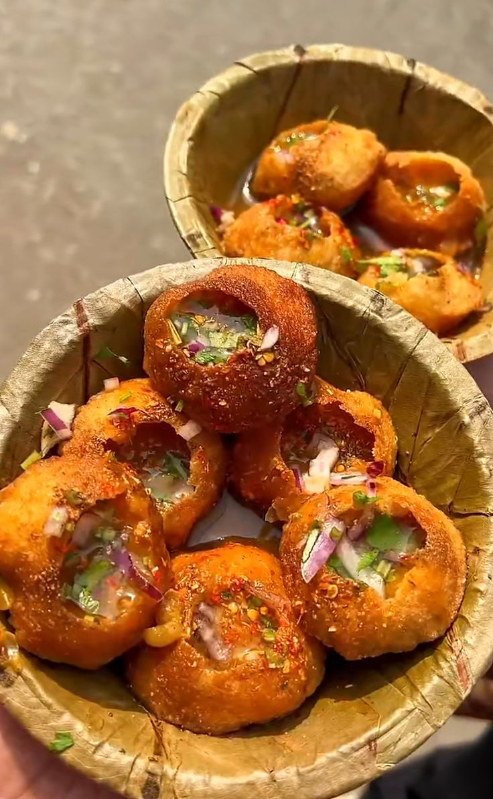
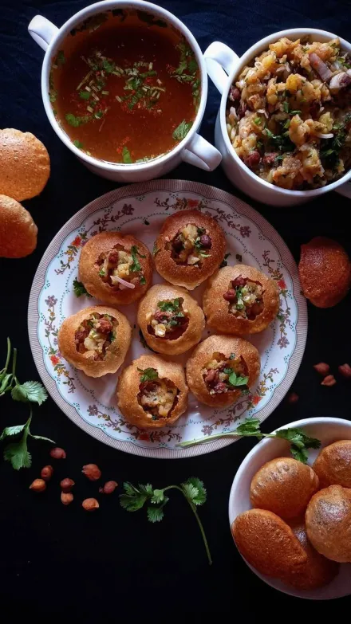

Panipuri is a popular indian street food that is made with delicious spices and flavorful water.It is yummy in taste and it spices take you to heaven.panipuri is mostly found in indian streets but the influence in India has brought it to Nepal too.Now, panipuri is also found in every street of Nepal too.
1. Take a puri and make a small hole on top.(fix the size of the hole according to your choice)
2. Fill it with potato and chickpeas to increase the taste
3. Add some chutney to make it spicy and more tastefull.
4. Dip it in the mint water or pour the water inside (i prefer to pour water)
5. Eat it whole in one bite.
1.Sukha Puri:It is filled with dry ingredients without water.
2.Meetha Puri:It is filled with sweet tamarind chutney.It is sweet and best for non spicy lovers.
3.Teekha Puri:It is en extra spicy version with more chilli and is loved by spicy lovers.
4.Dahi Puri:It is topped with yogurt and chutneys.
1. At first, Panipuri was so much popular in India but because of its influence in India has brought it to Nepal. Thats why it is now found in every Nepali street and because of that it is my favourite food.
2. Panipuri was originally created by Lady Draupadi to feed her 5 husbands. After that, the influence of it kept growing and it became a popular snack in india.
3. It was invented in Uttarpradesh and it was known as "phulki"

